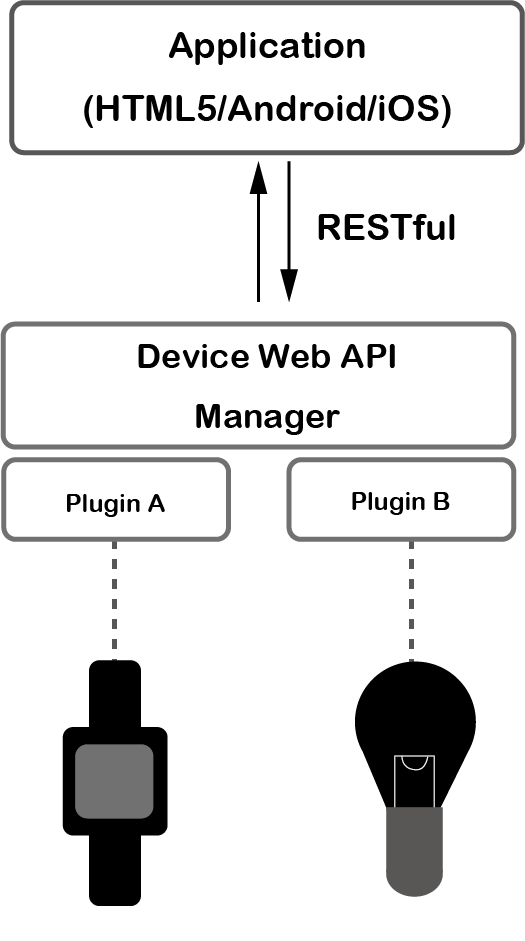

Device Web API Managerはスマートフォン上で仮想サーバとして動作し、デバイスを操作するためのWeb APIを提供します。
Device Web API Manager向けに作られたプラグインをインストールする事で、Web APIから操作できるデバイスを増やすことができます。
Device Web API Managerは、オープンソースプロジェクトであるDevice Connectをベースに開発された、実験的なアプリです。OMA GotAPI V1.1に準拠しています。
